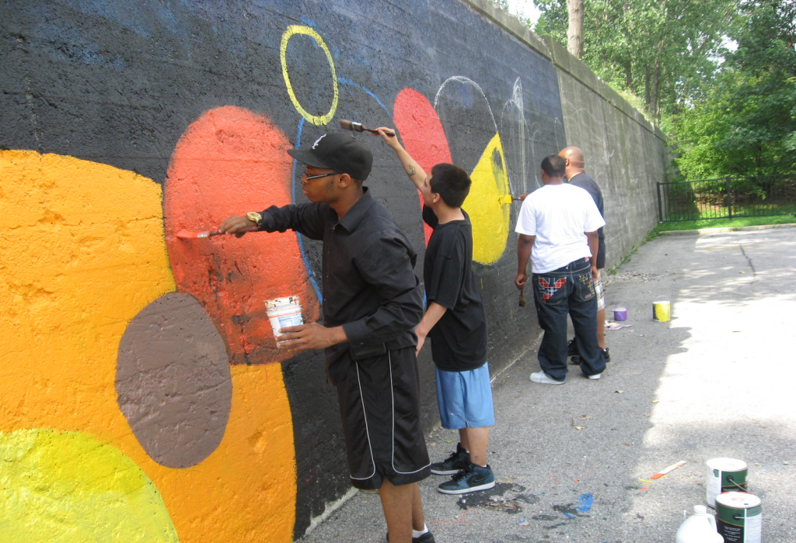

Our Core Values
Empowering individuals and families since 1999
Franklin County Family and Community Services is a non-profit agency staffed by professional staff and volunteers who empower individuals and families in the areas of support, advocacy, training, and counseling.
Help make a difference in the community by volunteering your time to the Franklin County Family and Community Services.
LEARN MOREFranklin County Family and Community Services relies on the generous donations of community members, corporations, others. Learn how to contribute below.
LEARN MORECompassionate and caring programs offered to help children, adults, and families with support for mental health, substance abuse, disabilities, and much more.
LEARN MORE